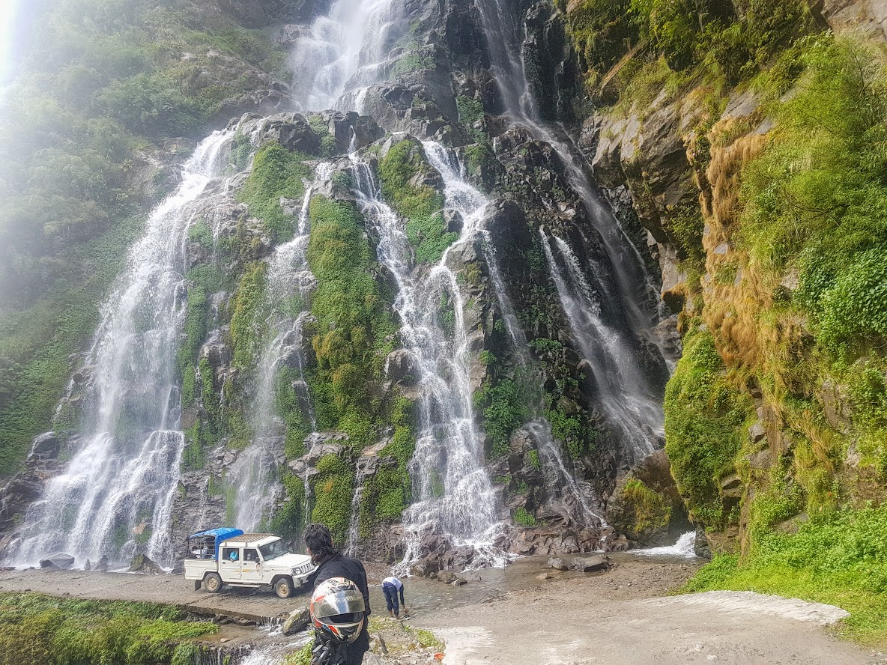
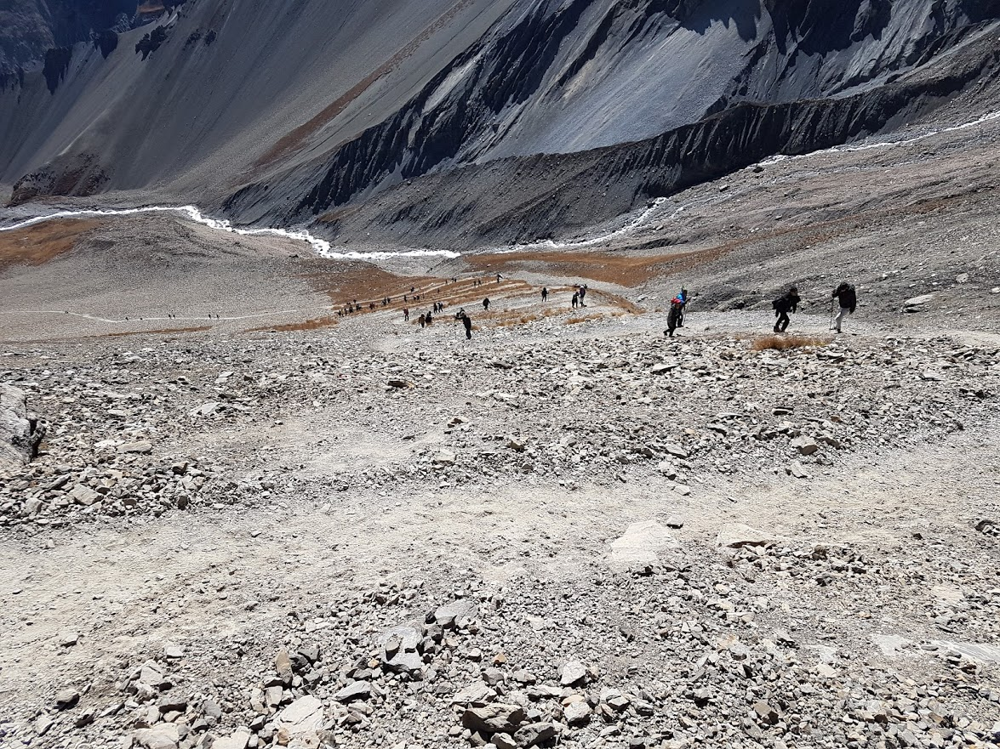

Into the Mountains
Back in October 2017, I went to one of my adventurous trip to Manang and Tilicho Lake - lake situated at elevation of 16,000 ft.
Day 1
Kathmandu to Chame
We were a group of 6 people with three motorcycles traveling towards the northwestern part of Nepal. We started our trip at 6 am as we have set a target of reaching Chame, Manang which include 40 miles of a mountain road. We were moving according to the plan and reached Besisahar, Lamjung with no delay. Then came the long mountainous road with lots of waterfalls, streams and rocky roads. Because of difficult terrain, we had to stop multiple times, fix our bikes and also our back (the road was very tough). Finally, after 5 hours of bumping rocky road, we reached Chame. We already had fixed our rooms for the night. We had a good dinner then enjoyed some good music and company and got good sleep after tiring night.
Day 2
Chame to Khansar
 Next day, we woke up early as possible then started roaming around the hotel. They had a lovely apple garden where we sat for like hour taking that warm sunlight. The weather was cold and windy but the sun kept us warm. A lovely breakfast was served for us -fresh fruits, Tibetan roti, and curry. A warm tea made the breakfast complete. Our bikes were leaking oils so went to fix them. Unfortunately, one bike couldn't be fixed. So, three skinny friends of mine rode in a single bike which was fun too. After good food and rest, we moved towards Manang. The road from Chame to Manang was pretty good. Surrounded by some huge peaks and hills, it was one of the scenic rides I have ever ridden. About 3 hours in, we reached Manang where we had lunch and gave our bikes some rest. We reached Khansar after 2 hours from Manang. Because of altitude our bikes had few problems but fixed them. Then, we started our trek to "Shree Kharka". It was an uphill trek for about 3 hours. We haven't booked any accommodation for the night. Once we reached Shree Kharka, we found out there was only one hotel which was already booked out. But luck was by our side a group of six people canceled their reservations. We got a small cottage where we camped out. That night Moon was very bright, the mountains were shining bright at night. It was the best view of the trip.
Day 3
Khansar to Tilicho Lake
 Finally, the day we will reach our destination - Lake Tilicho. The trek was very difficult. We have to cross a dangerous landslide area. So, we woke up at 4 am, had our breakfast and started our trek. We were covering up the ground very fast so that we can cross the landslide area below the wind starts blowing fast. Then, we made it past the area with no issues. We all carried a water bottle and foods with us. However, in later part of the trek, we ran out of water. Now, we were tired and thirsty. There was no source of water nearby. A fellow trekker coming down from Tilicho Lake provided us some water which helped us a lot. Finally, after around 8 hours of walking, we reached the place. It was calm, cold and worth all the struggle. Blueish lake on the base of Mt. Tilicho was truly an awesome place to be
Trip Highlights
- Rocky and Bumpy Road
- Adventuruos Hike
- Wonderful Moutains Views
- Perfect for star gazing
- World's Highest Lake
Where to stay???
| Day | Place | Accommodation |
|---|---|---|
| 1 | Chame | Comfortable Hotels and Resort Avaiable |
| 2 | Khansar | Two available hotels. Very busy during August - November |
| 3 | Tilicho Base | Few Hotels available but expensive because of location. |